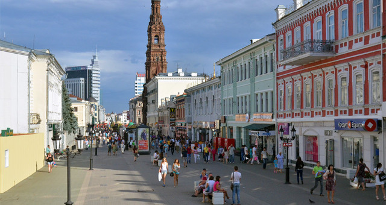
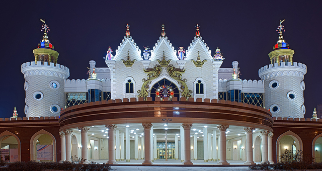

Существует несколько легенд, связанных с названием города. По самой распространенной из них Казань происходит от татарского слова «казан» - котел. Легенда гласит, что город был заложен на том месте, где без огня закипела вода в котле, врытом в землю. Символом города, изображенным на гербе, является мифическое драконоподобное существо Зилант.
Казань была основана как форпост на северных границах Волжской Булгарии более 1000 лет назад. Возраст города был определен во время раскопок на территории Казанского Кремля, когда была найдена чешская монета, датированная 929-930 годами, а также остатки каменной кладки и деревянной городской ограды, предметы утвари.
Улица Баумана часто оказывается первой в списке куда пойти в Казани. Это одна из двух пешеходных улиц города. Здесь вы по-настоящему ощутите колорит Казани. Встретятся вам и уличные музыканты, и студенты различных национальностей, и художники, готовые нарисовать ваш портрет прямо на месте. Встретит вас Баумана знаменитыми часами и колокольней Богоявленского собора, а проводит красивым видом на Кремль.
Татарский государственный театр кукол "Экият" построен в 1934 году. Несколько лет назад был реконструирован и приобрел поистине сказочный облик. Поднявшись на террасу вы увидите статую Маленького принца, являющийся вечным символом детства.
